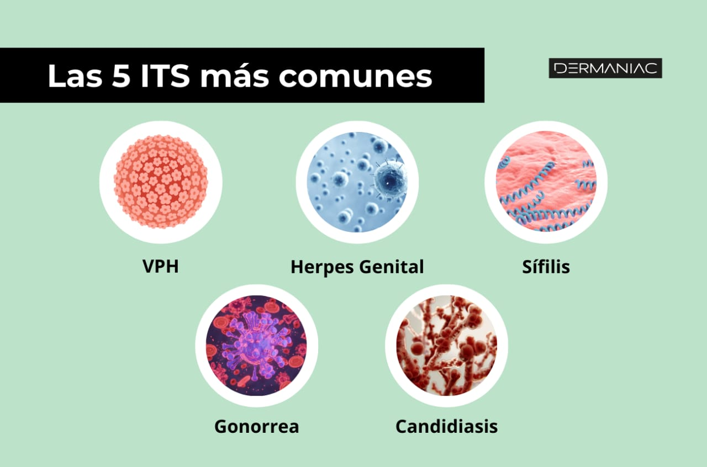

¿Qué son las Enfermedades de Transmisión Sexual?
Las Enfermedades de Transmisión Sexual (ETS) son infecciones
causadas por virus, bacterias o parásitos que se transmiten
principalmente por contacto sexual vaginal, oral o anal.
Algunas ETS también pueden transmitirse por sangre o de madre a bebé.
Tipos Comunes de ETS
- VIH y SIDA: virus que afecta el sistema inmunológico.
- Virus del Papiloma Humano (VPH): una de las ETS más comunes; puede causar verrugas o cáncer.
- Herpes Genital: infección viral que provoca ampollas dolorosas.
- Clamidia: infección bacteriana frecuente y a veces sin síntomas.
- Gonorrea: bacteria que afecta genitales, recto y garganta.
- Sífilis: infección bacteriana que progresa en varias etapas.
- Tricomoniasis: infección por parásito que causa irritación y flujo.
- Hepatitis B: virus que afecta gravemente el hígado.